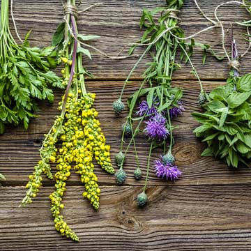

| Tipos | |||||
|---|---|---|---|---|---|
| Nombre comun | |||||
| Nombre cientifico | Droga | Uso | Advertencias | ||
| Aceite del Germen del Trigo | Triticum aestivum | Semillas | Tratamiento de la constipación | Estados inflamatorios u obstructivos del tracto digestivo. Apendicitis. Obstrucción biliar. Embarazo y lactancia | |
| Achiote | Bixa orellana | Semilla | Antiinflamatorio | Uso externo | |
| Agar - Agar | Gelidium cartillagineum | Planta entera | Tratamiento de la constipación | Estados inflamatorios u obstructivos del tracto digestivo. Apendicitis. Obstrucción biliar. Embarazo y lactancia | |
| Ají | Capsicum spp | Semillas | Rubefaciente | Uso externo | |